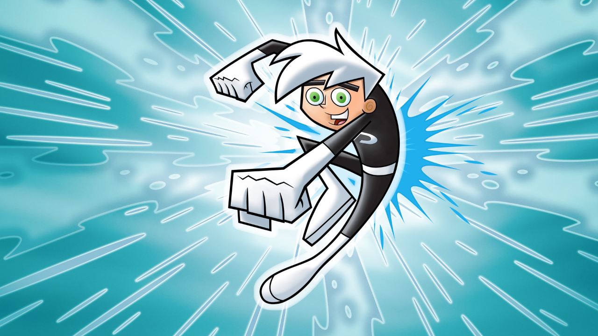

About Danny
Daniel "Danny" Fenton, a 14-year-old boy living in the small town of Amity Park.
Danny's Characteristics
- He's is also a crime-fighting ghost
- He's the son of the arguably "best" ghost exprets in town
- He has 2 friends
- He has great hair
Danny's Friends
Danny's friends are a part of his ghost fighting team